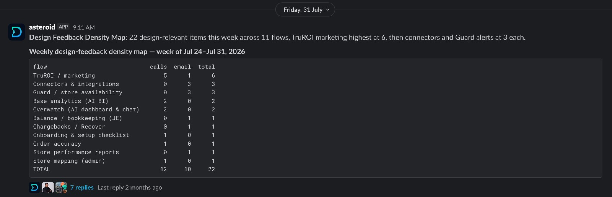

Making research part of the design loop.
I built Design Observability to bring customer feedback and product behavior into the same conversation. Instead of starting research from scratch for each question, a designer could ask about a flow and trace the evidence back to its source.
PMs and product owners referred to the outputs weekly to plan sprints. I also co-designed an evidence-led roadmap across 23 product flows and 140 screens with our VP of Engineering.
The question behind the skill
What should we improve next, and how do we know? Customer calls explain what people struggle with. Product analytics show where they go. Support conversations reveal the help they need along the way. Each tells only part of the story.
I wanted a repeatable way to bring those signals together around the actual screen or flow being designed, without turning every customer sentence into a feature request.
One question in. Traceable evidence out.
The entry point could be a page URL, a flow name, a keyword, or an intention. A shared taxonomy connected that question to screens, routes and the language used in the interface.
- 01 / Resolve the scopeMap the question to the product. Keep uncertain matches explicitly unmapped.
- 02 / Find the human signalExtract confusion, workarounds, complaints, requests and praise. Preserve the original words and their source.
- 03 / Join behaviorCompare feedback with usage, friction and completion evidence where available. Exclude internal users from counts.
- 04 / Return a reviewable reportGroup findings by flow and screen, separate interpretation from evidence, and surface gaps.
The hardest part was deciding what counts.
A polished summary can make weak evidence sound certain. I designed the skill around boundaries: quotes remain verbatim, ambiguous feedback stays unmapped, and claims carry an evidence type.
The report also keeps praise. Knowing what people value matters when simplification could remove something they depend on.
From individual flows to a roadmap
The skill normally answers a scoped question. A separate, one-off roadmap run extended that approach across all 23 flows. It joined usage, friction and customer evidence to compare opportunities across the product.
Fix what is getting in the way
Separate reliability problems from questions of comprehension, state or labeling. A failed control and an unclear next step need different responses.
Make existing capabilities findable
The roadmap identified discoverability as a cross-product theme. Repeated difficulty finding a capability, alongside low traffic to its surface, suggested a navigation problem rather than a missing feature.
Protect what already works
Positive feedback became a set of guardrails for future changes. New requests were considered alongside those constraints, rather than automatically moving to the top.
Research where planning already happened
The automation outputs appeared in Slack as a weekly design-feedback density map. A short overview showed where feedback was concentrated, with a thread for the evidence behind the numbers.

PMs and product owners used these outputs as a weekly reference for sprint planning. Putting the overview and its supporting evidence together made the research available during prioritization, rather than leaving it in a separate document.
I worked with our VP of Engineering to design the broader roadmap. The CEO also responded positively to the outputs. The clearest outcome was their use in the team's planning process; product impact still needs to be measured after changes ship.
The weekly Slack outputs, the designer-invoked research skill and the one-off roadmap sweep were related parts of the workflow. The supplied skill document describes the scoped research behavior; it does not itself define the weekly delivery schedule.
Designer review changed the system
Some initially convincing findings turned out to describe third-party portals or a customer's own workflow, rather than Loop. Familiar words like “dashboard” and “settings” were not enough to establish context.
Before mapping a quote, establish which product the person is actually using.
That correction sharpened the extraction criteria. The skill's learning mechanism is a set of labeled examples from designer review, so a correction can become a reusable rule instead of a one-time edit.
What this produced, and what it did not
The output was a ranked roadmap with supporting evidence, confidence levels and explicit limitations. It helped distinguish local interface fixes from a broader discoverability opportunity.
This was decision support, not autonomous prioritization. The roadmap run did not compute funnel drop-off, inspect session recordings or establish before-and-after impact. Some source coverage was incomplete. Those gaps remained visible rather than being filled with assumptions.
The reusable skill automates evidence gathering and structuring when invoked by a designer. The fleet-wide ranking was a separate extension, and human review remained essential.
What I take forward
Research automation is useful when it makes the reasoning easier to question. The strongest part of this work is the path from a design question to a source, a bounded interpretation and a decision someone can review.
Next, I would validate the highest-priority hypotheses with recordings and targeted research, then compare outcomes after changes ship.